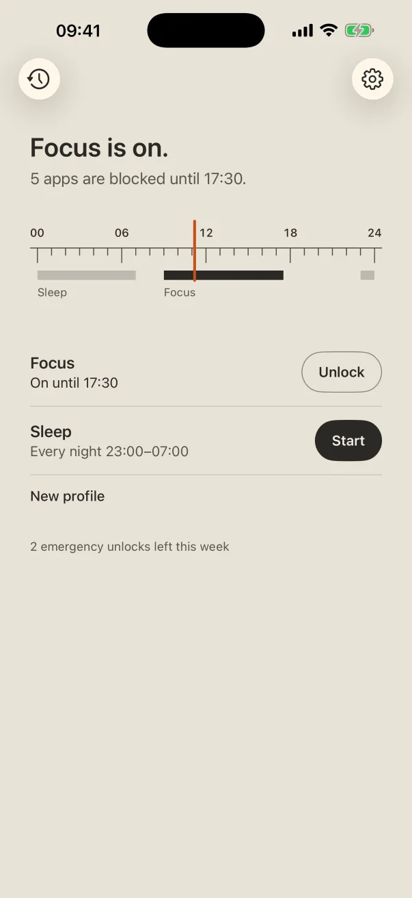
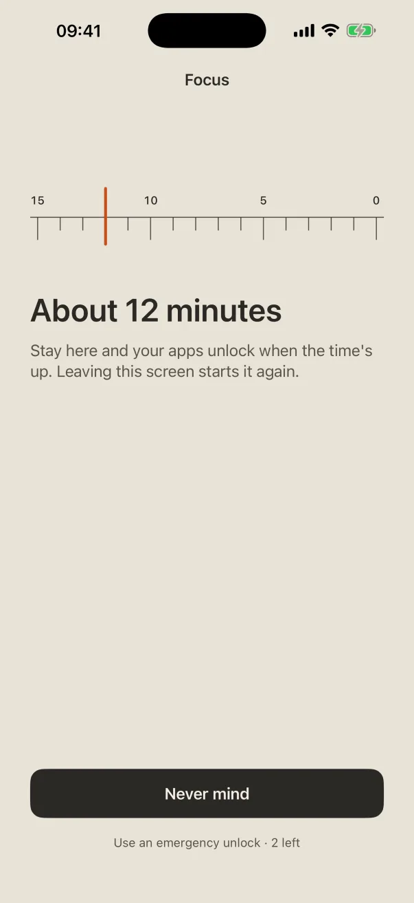
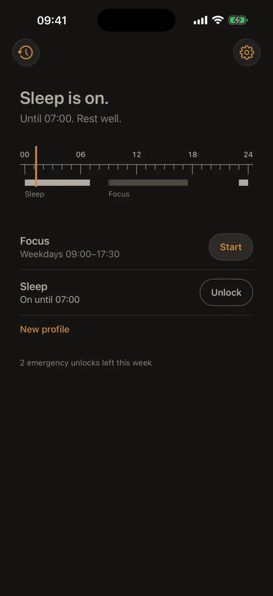
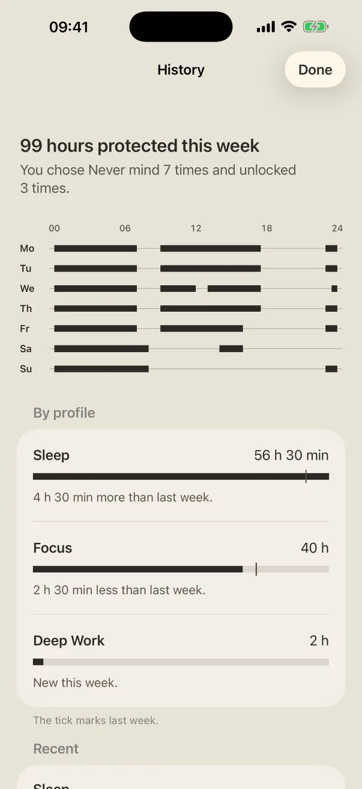

At work and at night, getIRL shuts the apps you choose on your own iPhone. Getting back to them takes a few minutes, not willpower.
Get getIRL on the App StoreFree · iPhone · iOS 17 or later · No account

Blocking is easy. What getIRL changes is the way back: a short wait you have to sit with, so opening the app is a choice instead of a reflex.
Apps, categories and websites, picked from Apple's own list. Make a routine for focus, sleep, deep work or family time.
On a schedule, like every night 23:00–07:00, or for an hour right now. They hold even when the app is closed.
Wait out a short countdown and apps open for 10 minutes, then the block comes back by itself. A few emergency unlocks each week skip the wait.
Ask to unlock from the block screen and getIRL opens a calm countdown. Stay with it and the apps open. Leave, and it starts again. Most of the time, you'll find you didn't need them.

When Sleep is on, getIRL goes dark and still: warm grey on charcoal, nothing ticking, nothing to watch. Just a quiet reminder that it's late, and that the apps will still be there in the morning.

History shows the week on the same printed scale, the hours each routine protected, and a quiet note at 08:00 about the day before. No streaks, no guilt.

There's no account, no server, no ads, no analytics and no tracking. getIRL uses Apple's Screen Time, which never even tells it which apps you picked.
Open getIRL once; it repairs blocks each time it opens. If it is still blocked, go to iPhone Settings → Screen Time, switch getIRL's access off and on again.
getIRL needs Screen Time access. Open the app; it asks for access if it is off.
Notifications can be silenced by a Focus mode. Open getIRL within 10 minutes of tapping "Ask to unlock" and the countdown opens by itself.
Yes. Screen Time access can be turned off in Settings with Face ID or your passcode. getIRL notes it in History, without judgement.
Questions, problems or ideas: bruno.pais88@gmail.com. I read every message.